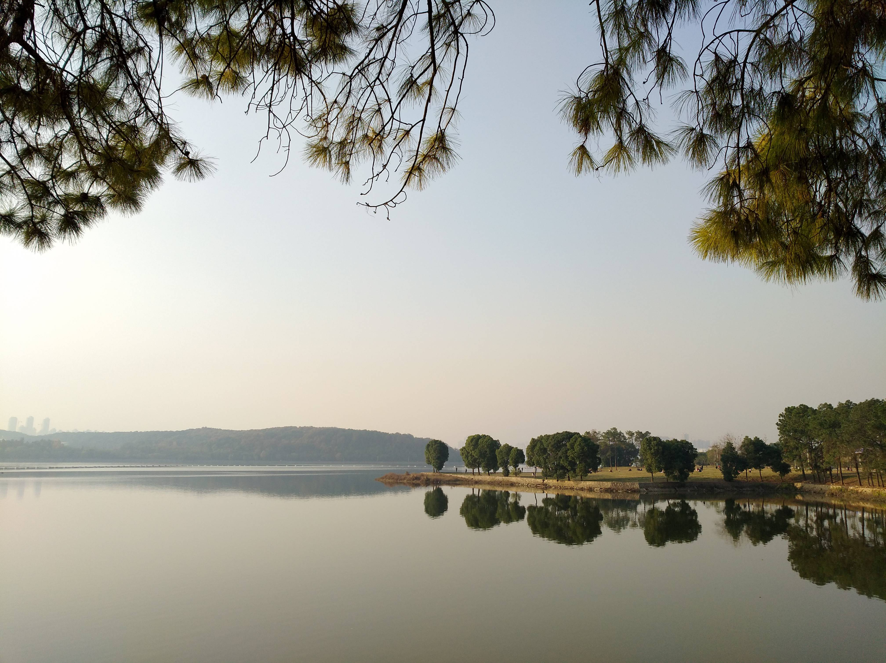
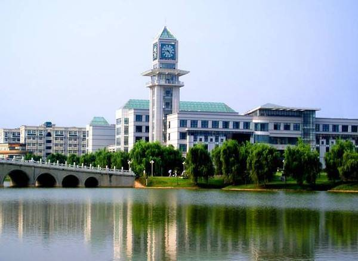
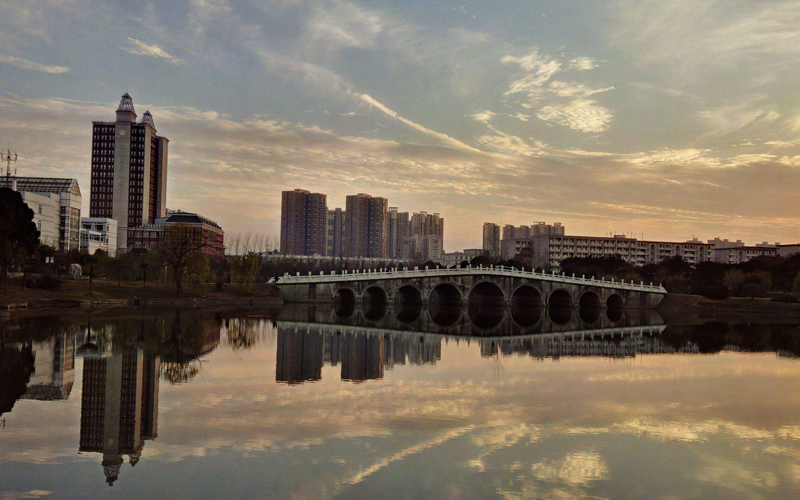
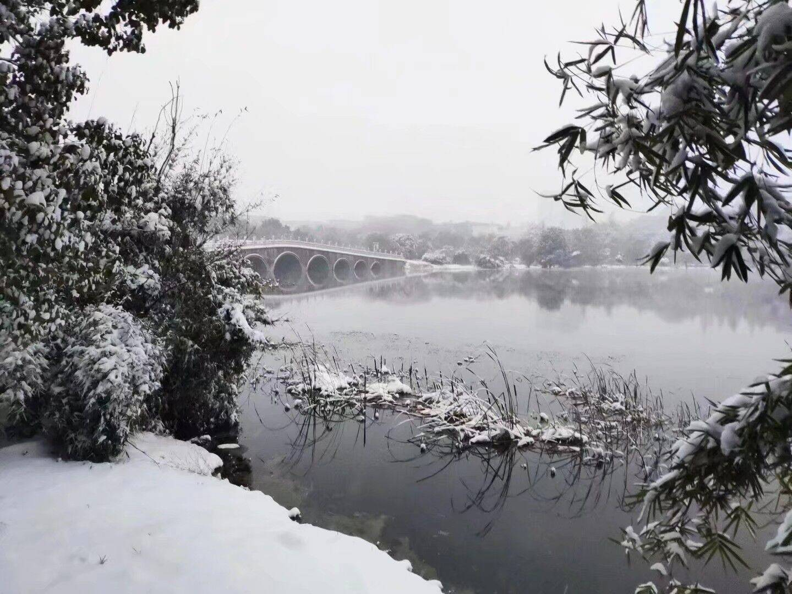
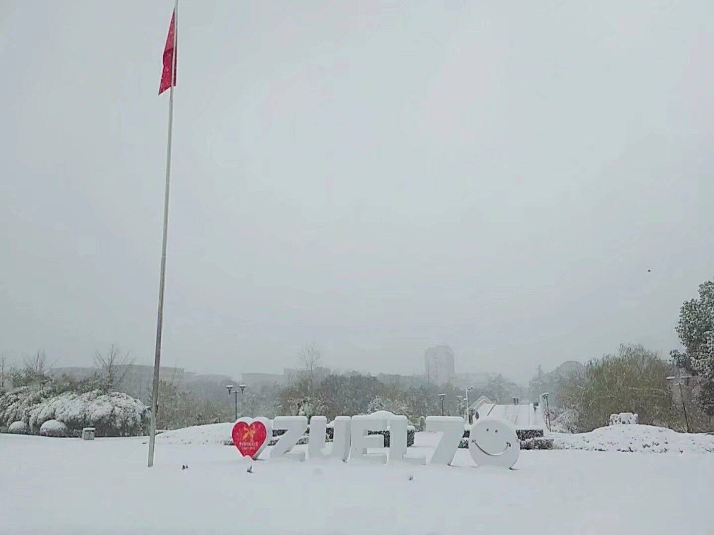
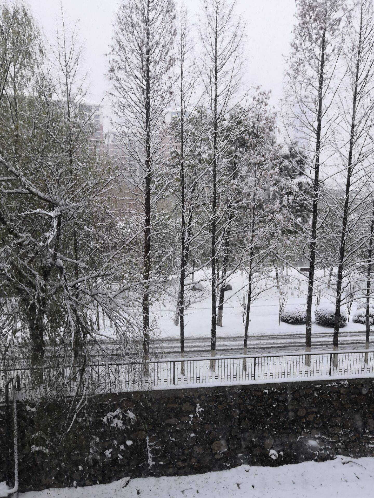

校园
| 学校 | 时间 |
| 中南财经政法大学 | 2016.09——至今 |
| 云南省玉溪第一中学 | 2013.09——2016.06 |
| 峨山县锦屏中学 | 2010.09——2013.07 |
| 峨山县回龙小学 | 2004.09——2010.07 |

夕阳西下时学校西面的南湖，隔湖相望的是华中农业大学，北面是中南民族大学。
文波楼，坐落在晓南湖畔，文波对面是文澜楼。学校三栋主要的教学楼：文波楼、文澜楼、文泰楼，突然想起那些奔波在波泰高速的日子，课间25分钟两边跑，每学期的课表总有那么几天排的有点“变态”。


九孔桥坐落于晓南湖之上，是的，有九个孔所以叫九孔桥。桥下有灯，但一般不会开，只有在校庆期间晚上开过灯。



中南大雪景
这是在这个学校度过的第三年，过的很快，感觉还没有准备好就快要毕业了。等毕业了再回学校，看这些风景或许又是另一种感受了。